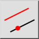
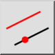
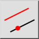
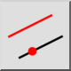

Versatz (durch Punkt)
Werkzeugleiste / Icon:
 

Menü: Modifizieren > Versatz (durch Punkt)
Tastenkürzel: O, H
Befehle: offsetthrough | oh
Werkzeugleiste / Icon:
 

Menü: Modifizieren > Versatz (durch Punkt)
Tastenkürzel: O, H
Befehle: offsetthrough | oh
Mit diesem Werkzeug können Sie Parallelen zu existierenden Linien oder konzentrische Kreise und Kreisbogen konstruieren. Die Parallele oder der konzentrische Kreis oder Bogen geht durch einen angegebenen Punkt.